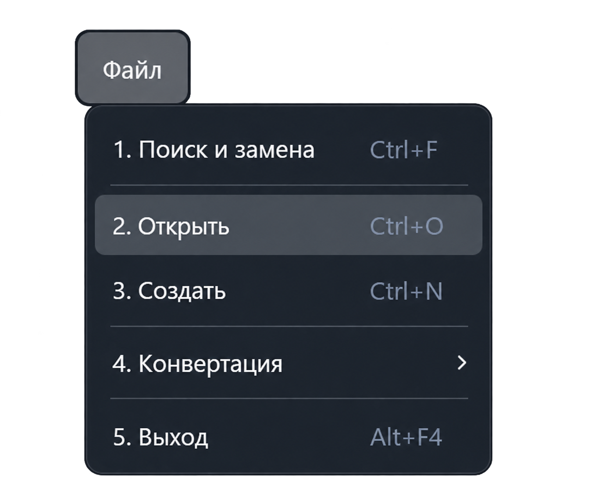

Функция «Открыть»
Команда открывает существующие программы контроля, текстовые документы и протоколы. Для выбора файла откройте «Файл → Открыть» или нажмите Ctrl + O.

Как открыть файл
- Выберите команду «Открыть». Появится системное окно выбора файлов.
- Перейдите в папку с документом. Приложение запоминает последнюю выбранную папку.
- При необходимости измените фильтр типов файлов в нижней части окна.
- Выберите нужный файл и нажмите «Открыть» либо дважды щёлкните по файлу. Можно выбрать несколько файлов: приложение откроет их последовательно.
Какие файлы можно выбрать
| Группа | Расширения |
|---|---|
| Программы контроля | .pk, .pkw, .opk, .opkw |
| Протоколы | .asktrace, .askresult, .askreport |
| Протоколы старых форматов | .lst, .lstw, .rtlst |
| ACS-файлы | .acs |
| Текстовые документы | .txt |
Фильтр Supported files показывает совокупность поддерживаемых расширений. Остальные фильтры ограничивают список выбранной группой. Фильтр All files показывает все файлы в папке; он не добавляет поддержку новых форматов.
Что происходит после выбора
Способ открытия зависит от типа документа. Программы контроля и текстовые файлы передаются в редактор, протоколы — в соответствующий режим просмотра. При выборе итогового протокола приложение пытается загрузить связанные данные выполнения.
Для старого формата .opk предусмотрено преобразование в .opkw
перед открытием. Если преобразование не завершилось успешно, документ не открывается.
Открытие программы контроля не запускает проверку изделия. Трансляция и запуск выполняются отдельными командами меню «Выполнение».
Если файл не открывается
- Приложение сообщает о работе с аппаратурой. Завершите текущее выполнение и повторите открытие.
- Файл не виден в окне выбора. Проверьте текущую папку и выбранный фильтр расширений.
- Появилось сообщение об ошибке. Прочитайте его причину: для преобразуемых программ и итоговых протоколов могут потребоваться дополнительные файлы или корректные исходные данные.